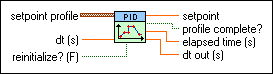
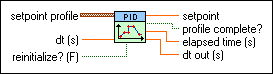

PID Setpoint Profile VI
Owning Palette: PID VIs
Requires: Full Development System
Generates setpoint values over time in a control loop for ramp and soak types of control applications.

 Add to the block diagram Add to the block diagram |
 Find on the palette Find on the palette |
Owning Palette: PID VIs
Requires: Full Development System
Generates setpoint values over time in a control loop for ramp and soak types of control applications.

| Add to the block diagram |
Find on the palette |
Refer to the Simulation - Cascade and Feedforward Surge Tank Level VI in the labview\examples\control\PID directory for an example of using the PID Setpoint Profile VI.
 Open example Find related examples
Open example Find related examples